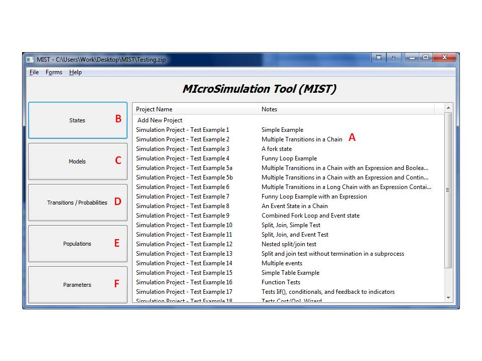

Also, the user should collect all known rules that describe parameter change such as Age increase and write those down.
Open a command terminal and navigate to your working directory using the cd <working directory> command then type python MISTGUI.py. The main form of the system, titled 'MIcroSimulation Tool', will open.

Using this form the user can load and save data and access all system parameters. Here is a short description of the basic operations that one can perform with this form:
The system holds its data in files in a zip archive. Each file can contain many Projects / Models / Populations using the same or different terminology. The system can load this information and at the end of work the user can save the modified information back to a file. Note that while working with the system the information is never saved to a file until the user specifies the save in this form.
In the event the system does not close properly any modifications made will be lost. A proper exit of the system will ask the user to save the information to file. The automatic backup mechanism during file saving helps track back changes in data and helps maintain integrity.
Note that the system does not lock files after loading them during work. Also note that saving records in the system is not the same as saving the file. Records and entities in other forms are saved to memory rather than to a file. The only way to save to a file is through the main form menu.
A project is the main entity defined in the system. Projects define the Simulation that the system will run and can share information such as models or parameters.
All the projects currently loaded in the system are listed in the main form in the project list (A).
To view a project, double click its entry in the list (A) in the main form. The appropriate form will open.
To add a new project to the system, double click the text Add New Project at the top of the list (A). Then select the type of the project from the window that will open. The appropriate form will open.
One way to familiarize yourself with the system is to load the test examples file Testing.Zip created by the system during installation. This file provides an implementation of all the simulation examples provided in the test example document SimulationExamples.pdf that is also created by the installation.
Each project is an example from this document. Double clicking on projects listed in (A) will open the project clicked upon. Clicking the buttons marked as (B,C,D,E,F) will allow exploring the underlying data that created these projects.
Before working with the computer system, some preparation is required. This page describes the preparation stages and the workflow with the system from a more abstract view.
When developing a new model or modifying an existing model, it is essential to perform an extensive literature review and to consult with clinical experts who can describe the progression of the disease. During the literature review, it is important to identify studies that provide estimates of the transition probabilities for the progression of the disease through time.
The information from the literature review must be translated into system terminology. This involves identification of important keywords that describe disease progression; these are then used in different categories defined by the computer system:
The identified states and sub-processes should be depicted as boxes in a diagram; the boxes should be connected with arrows to signify transitions between states. The output of this may look like:
Also, the user should collect all known rules that describe parameter change such as Age increase and write those down.
It is necessary to specify the population of individuals to whom the simulation should apply. The population should contain information about the initial states of each individual. Also, parameters to be used in the simulation should be defined in this set. Populations can be defined as data table or as formulas describing distributions.
The model can be enhanced by adding rules for updating parameters used in the simulation. Examples of rules include:
The simulation can then be performed to predict outcomes of disease progression over the defined population set. After analyzing the results, the simulation can be repeated after changing parameters or using a different population set to reflect different model conditions. Each change in the simulation may require creating a new simulation project. This can be easily done by copying the existing project.
For further details, please see Simulation for details.